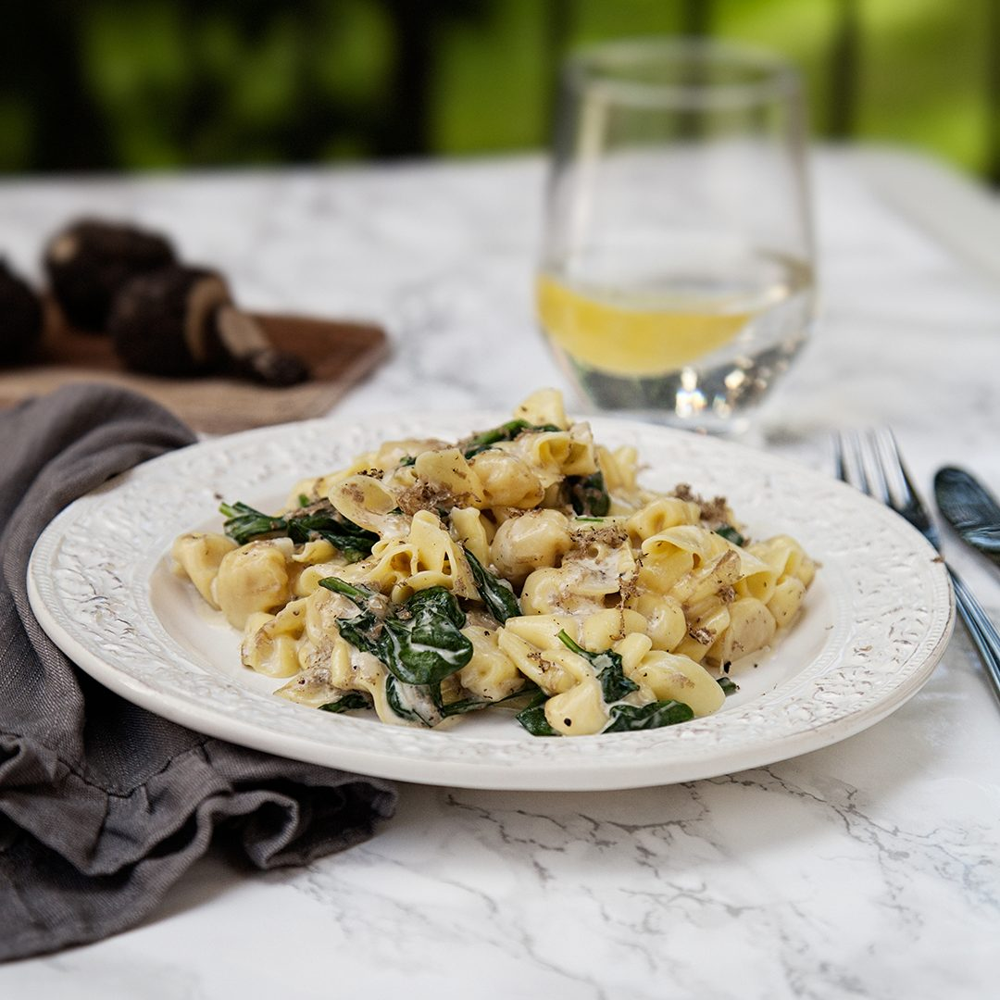

Krämig Pasta med Vitlök och Spenat
Tillbaka till startsidan
Ingredienser
250 g pasta
2 vitlöksklyftor
2 dl matlagningsgrädde
2 nävar färsk spenat
1 dl riven parmesan
Salt & peppar
Olivolja
Gör så här
Koka pastan enligt anvisningarna på förpackningen.
Fräs hackad vitlök i lite olivolja i en stekpanna.
Häll i matlagningsgrädden och låt sjuda i ett par minuter.
Tillsätt spenaten och låt den mjukna.
Blanda i pastan och parmesanosten. Smaka av med salt och peppar.
Bild på resultatet
